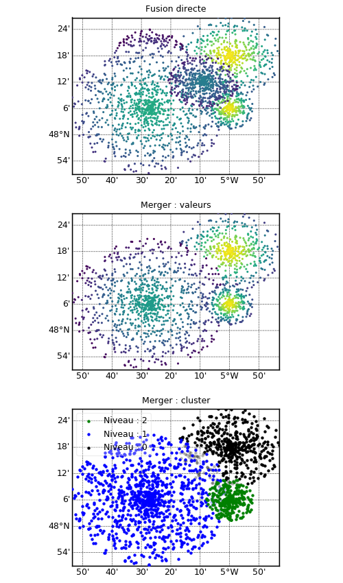

1.3.4.2.1.2. Fusion de bathymétries XYZ¶
Voir : XYZBathy map()

En haut, bathymétries diverses fusionnées directement par addition, avec celle en bas à gauche opaque. Au centre, trois bathymétries opaques distinguée dans le fusionneur, avec les points masquées partiellement transparents. En bas, de même mais avec les valeurs.
# Creation de fausses bathymetries xyz
import numpy as N, os
from vacumm.bathy.bathy import XYZBathy, XYZBathyMerger
# - fonction generatrice
def gene_bathy(xc, yc, xr, yr, n=500, amp=30.):
noise = N.random.random(n)
a = N.random.random(n)*N.pi*2
r = N.random.random(n)
x = xc + xr*r*N.cos(a)
y = yc + yr*r*N.sin(a)
return N.asarray([x, y, N.exp(-(x-xc)**2/xr**2-(y-yc)**2/yr**2)*amp+noise])
# - creations
xyz1 = XYZBathy(gene_bathy(-5, 48.3, .3, .15)) # top right
xyz2 = XYZBathy(gene_bathy(-5.45, 48.3, .2, .1, amp=10)) # top left
xyz3 = XYZBathy(gene_bathy(-5.45, 48.1, .45, .25, n=1000, amp=20), transp=False) # bot left
xyz4 = XYZBathy(gene_bathy(-5., 48.1, .14, .08, n=300)) # bot right
fxyz5 = __file__[:-2]+'xyz5.xyz'
N.savetxt(fxyz5, gene_bathy(-5.15, 48.2, .2, .1, amp=15).transpose()) # center
# Fusion directe
xyz = xyz1 + xyz2 + xyz3 + xyz4 + fxyz5
# Plot
import pylab as P ; P.figure(figsize=(5., 8.5)) ; P.subplot(311)
P.rcParams['font.size'] = 9
P.subplots_adjust(bottom=.03, top=.97, hspace=.25)
kwplot = dict(show=False, colorbar=False,map_res=None, margin=0., map_autoresize=0,
xmin=xyz.xmin, xmax=xyz.xmax, ymin=xyz.ymin, ymax=xyz.ymax)
xyz.plot(title='Fusion directe', **kwplot)
# Utilisation d'un fusionneur
# - init
merger = XYZBathyMerger()
# - ajout de xyz direct
merger += xyz1
merger.append(xyz2)
merger += xyz3
merger += xyz4
# - ajout a partir d'un fichier
merger += fxyz5
# - suppression d'un xyz
merger -= xyz2
# - suppression du dernier dataset
del merger[-1]
# - changement d'autres attributs
for i, xyz in enumerate(merger):
xyz.long_name = 'Niveau : %i'%i # Pour les legendes
xyz.set_transp(False) # Opacite
# Plot du fusionneur
# - valeurs
P.subplot(312)
merger.plot(mode='value', title='Merger : valeurs', **kwplot)
# - cluster
P.subplot(313)
merger.plot(mode='cluster', size=10, title='Merger : cluster', marker='o',
legend_loc='upper left', savefigs=__file__, savefigs_pdf=True, **kwplot)
# On recupere le tout dans un xyz
merged_xyz = merger.get_xyz(long_name='Merged')
# On peut donc le sauvegarder
merged_xyz.save(__file__[:-2]+'merged.xyz')
P.close()